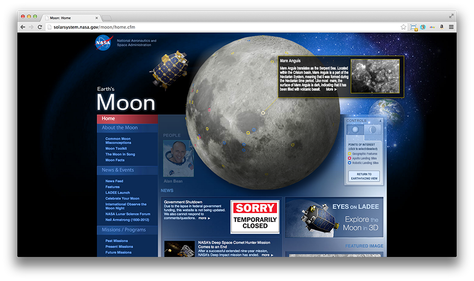

Introduction
For this assignment, I used the application xSort and first did the card sorting myself, before asking a friend to do it. I got some very interesting results, with some differences between the two card sortings. I'll start by explaining my results first, and comparing them to the original site structure. Then, I'll do the same with my friend's results.
My Results
My results were very similar to the original website's structure. I will go over the 8 main groups of the website individually, and explain how my structure varied from the original.
- Home Page: I structured the home page very much like the original website is. I selected the most important information and put it in the home page ("Explore the Moon in 3D", a Featured Image, a News Feed, a Twitter Feed, and a Calendar). I think this includes the most basic information, and therefore should be on the first page the users see.
- About the Moon: The only two differences I got in this section was the "Features" and "Concepts" link. I think they made more sense to be in this category, because they directly deal with characteristics of the moon.
- News & Events: I don't see how a forum is News or an Event. Same thing with Features (like I said before) and Neil Armstrong.
- Missions/Programs: I think the word "Programs" here is very confusing. That's why I added "Astronommers Without Borders" and "Astronomical League" to this category.
- Multimedia: I structured this exactly as the original website.
- Strategic Partners: I got three of them like the original website.
- People: Under "People" I put Neil Armstrong, because I think he is the personification of the moon.
- Get Involved: I associated the words "Challenge" and "Forum" with user involvement, which is why I put these categories here.
My results from card sorting Nasa's Moon Website. Used the application xSort.